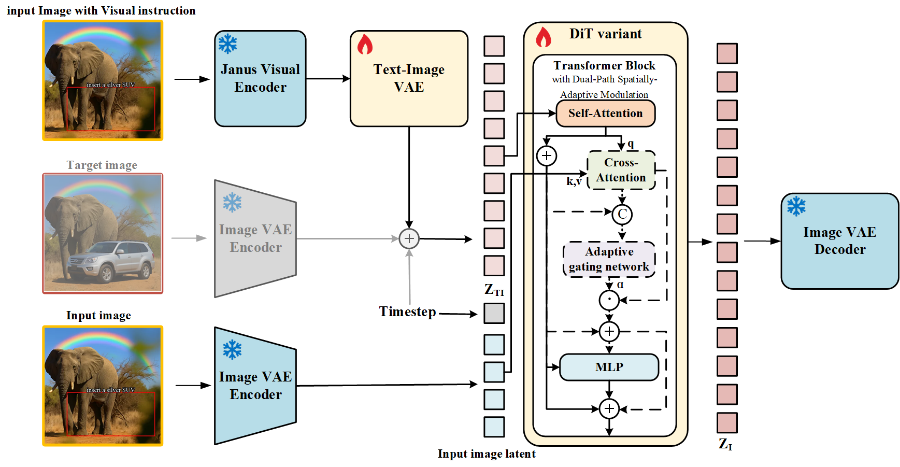

FlowInOne
Unifying Multimodal Generation as Image-in, Image-out Flow Matching
Abstract
Multimodal generation has long been dominated by text-driven pipelines where language dictates vision but cannot reason or create within it. We challenge this paradigm by asking whether all modalities, including textual descriptions, spatial layouts, and editing instructions, can be unified into a single visual representation. We present FlowInOne, a framework that reformulates multimodal generation as a purely visual flow, converting all inputs into visual prompts and enabling a clean image-in, image-out pipeline governed by a single flow matching model. This vision-centric formulation naturally eliminates cross-modal alignment bottlenecks, noise scheduling, and task-specific architectural branches, unifying text-to-image generation, layout-guided editing, and visual instruction following under one coherent paradigm. To support this, we introduce VisPrompt-5M, a large-scale dataset of 5 million visual prompt pairs spanning diverse tasks including physics-aware force dynamics and trajectory prediction, alongside VP-Bench, a rigorously curated benchmark assessing instruction faithfulness, spatial precision, visual realism, and content consistency. Extensive experiments demonstrate that FlowInOne achieves state-of-the-art performance across all unified generation tasks, surpassing both open-source models and competitive commercial systems, establishing a new foundation for fully vision-centric generative modeling where perception and creation coexist within a single continuous visual space.
Visual Demos
FlowInOne unifies multiple generation settings. Each tile shows input (left) and output (right). Click to open a viewer with a drag slider to compare.
VisPrompt Dataset

VisPrompt is a comprehensive dataset that comprises eight distinct data types, including class-to-image generation, text-to-image generation, text-in-image editing, text bounding box editing, visual marker editing, doodles editing, force understanding, and trajectory understanding. The dataset covers a wide spectrum of image-to-image generation, ranging from basic text-in-image generation to compositional editing, and further to physics-aware instruction following.
Method

Overview of the FlowInOne architecture, a general and simple framework using Flow Matching for continuous evolution in only one modality. FlowInOne employs a Dual-Path Spatially-Adaptive Modulation to adapt computation by modality. For input image rendering with only text, the structural branch is bypassed to strictly follow semantic evolution. Conversely, for image editing, a spatially-adaptive gated network and cross attention activates to selectively inject source priors, dynamically balancing original image preservation with instruction-driven reconstruction.
Comparison of visual instruction generation across methods
Benchmark & Evaluation
We evaluate visual instruction following using a VLM-based pipeline, which takes three inputs: the source image (Case A: text-only canvas; Case B: annotated real images), the generated output, and the text instruction extracted directly from the source image. This explicitly provided text prevents evaluation errors that could occur if the evaluating VLM fails to accurately understand the instruction from the visual input. Each sample is evaluated on a 1-to-5 scale across four criteria—instruction fidelity, content consistency, visual realism, and spatial precision—yielding a final outcome of PASS or FAIL.
To complement this rubric and more thoroughly capture visual quality and editing accuracy, we additionally define four quantitative metrics tailored to our evaluation paradigm; see the paper for full definitions and formulations.
VP-Bench results
Success ratios on the VP-Bench visual-instruction benchmark under four evaluator: three SOTA VLMs (GPT‑5.2, Gemini 3, Qwen3.5) and human. Total is the average success rate across all eight task categories. Bold numbers are the highest success rate in that column among all listed methods (ties are both bold).
Abbrev. C2I: class-to-image · T2I: text-to-image · TIE: text-in-image edit · FU: force understanding · TBE: text & bbox edit · TU: trajectory understanding · VME: visual marker edit · DE: doodles edit
BibTeX
@article{yi2026flowinoneunifyingmultimodalgenerationimagein,
title={FlowInOne:Unifying Multimodal Generation as Image-in, Image-out Flow Matching},
author={Junchao Yi and Rui Zhao and Jiahao Tang and Weixian Lei and Linjie Li and Qisheng Su and Zhengyuan Yang and Lijuan Wang and Xiaofeng Zhu and Alex Jinpeng Wang},
journal={arXiv preprint arXiv:2604.06757},
year={2026}
}drag divider or use ← →